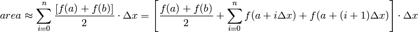
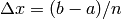

As mentioned in earlier, the simplest message passing involves two processes: a sender and a receiver. Let us begin by demonstrating a program designed for two processes. One will draw a random number and then send it to the other. We will do this using the routines Comm.Send and Comm.Recv:
#passRandomDraw.py
import numpy
from mpi4py import MPI
comm = MPI.COMM_WORLD
rank = comm.Get_rank()
randNum = numpy.zeros(1)
if rank == 1:
randNum = numpy.random.random_sample(1)
print "Process", rank, "drew the number", randNum[0]
comm.Send(randNum, dest=0)
if rank == 0:
print "Process", rank, "before receiving has the number", randNum[0]
comm.Recv(randNum, source=1)
print "Process", rank, "received the number", randNum[0]
To demonstrate that the code is working the way we expect, we have the drawing process print the value that it drew. Then we have the receiving process print the value of the vairable into which we will receive to show that it is zero, and then we print the value that it receives after the call to Recv. We now give the syntax of the Send and Recv rountines in the following section.
Performs a basic send. This send is a point-to-point communication. It sends information from exactly one process to exactly one other process.
| Parameters: |
|
|---|
Example:
import numpy
from mpi4py import MPI
a = numpy([1,2,3])
if MPI.COMM_WORLD.rank == 0:
MPI.COMM_WORLD.Send(a, dest = 1)
else:
MPI.COMM_WORLD.Recv(a, source = 0)
Basic point-to-point receive of data
| Parameters: |
|
|---|
Example:
See example for Comm.Send
Note
Send and Recv are referred to as blocking functions. That is, if a process calls Recv, it will sit idle until it has received a message from a corresponding Send before it will proceeed. See the appendix for the corresponding non-blocking functions Isend and Irecv (I stands for immediate). In essence, Irecv will return immediately. If it did not receive its message it will indicate to the system that it will be receiving a message, proceed beyond the Irecv to do other useful work, and then check back later to see if the message has arrived. This can be used to dramatically improve performance.
Tip
On a Recv you do not always need to specify the source. Instead, you can allow the calling process to accept a message from any process that happend to be sending to the receiving process. This is done by setting source to a predefined MPI constant, source=ANY_SOURCE (note that you would first need to import this with from mpi4py.MPI import ANY_SOURCE or use the syntax source=MPI.ANY_SOURCE).
Now that we understand basic communication in MPI, we will proceed by parallelizing our first algorithm–numerical integration using the “trapezoid rule.” Early on in most calculus classes, students learn to estimate integrals using the trapezoid rule. A range to be integrated is divided into many vertical slivers, and each sliver is approximated with a trapezoid. The area of each trapezoid is computed, and then all their areas are added together.

where .
In Python, a simple serial formulation of the trapezoidal rule would be as follows:
#trapSerial.py
#example to run: python trapSerial.py 0.0 1.0 10000
import numpy
import sys
#takes in command-line arguments [a,b,n]
a = float(sys.argv[1])
b = float(sys.argv[2])
n = int(sys.argv[3])
def f(x):
return x*x
def integrateRange(a, b, n):
'''Numerically integrate with the trapezoid rule on the interval from
a to b with n trapezoids.
'''
integral = -(f(a) + f(b))/2.0
# n+1 endpoints, but n trapazoids
for x in numpy.linspace(a,b,n+1):
integral = integral + f(x)
integral = integral* (b-a)/n
return integral
integral = integrateRange(a, b, n)
print "With n =", n, "trapezoids, our estimate of the integral\
from", a, "to", b, "is", integral
Note
Notice how we use numpy.linspace. Here linspace creates an iterable array that includes n+1 evenly spaced points (among which are the endpoints). We subtract half of the value of the function evaluated at the two endpoints to accomodate the formula laid out above.
In this program, the bulk of the work is executed in the integrateRange subroutine. For values of x from a to b, the integral is iteratively summed then returned. Since the area of each trapezoid can be calculated independently of the others, this algorithm can easily be parallelized.
The most important step in parallelizing an algorithm is finding the independent computations. This is the first step of architecting a parallel algorithm. With the trapezoidal rule, it’s easy to see that the calculation of the area of trapezoid can be performed independently of any other trapezoid, and so dividing the data at the trapezoid level seems natural. The code divides up the interval into the calculation of n trapezoids. To prallelize this process, we will divide the interval into n trapeziods and then divide up those n trapezoids to be calculated among the number of processors, size. Look at the following code:
#trapParallel_1.py
#example to run: mpiexec -n 4 python trapParallel_1.py 0.0 1.0 10000
import numpy
import sys
from mpi4py import MPI
from mpi4py.MPI import ANY_SOURCE
comm = MPI.COMM_WORLD
rank = comm.Get_rank()
size = comm.Get_size()
#takes in command-line arguments [a,b,n]
a = float(sys.argv[1])
b = float(sys.argv[2])
n = int(sys.argv[3])
#we arbitrarily define a function to integrate
def f(x):
return x*x
#this is the serial version of the trapezoidal rule
#parallelization occurs by dividing the range among processes
def integrateRange(a, b, n):
integral = -(f(a) + f(b))/2.0
# n+1 endpoints, but n trapazoids
for x in numpy.linspace(a,b,n+1):
integral = integral + f(x)
integral = integral* (b-a)/n
return integral
#h is the step size. n is the total number of trapezoids
h = (b-a)/n
#local_n is the number of trapezoids each process will calculate
#note that size must divide n
local_n = n/size
#we calculate the interval that each process handles
#local_a is the starting point and local_b is the endpoint
local_a = a + rank*local_n*h
local_b = local_a + local_n*h
#initializing variables. mpi4py requires that we pass numpy objects.
integral = numpy.zeros(1)
recv_buffer = numpy.zeros(1)
# perform local computation. Each process integrates its own interval
integral[0] = integrateRange(local_a, local_b, local_n)
# communication
# root node receives results from all processes and sums them
if rank == 0:
total = integral[0]
for i in range(1, size):
comm.Recv(recv_buffer, ANY_SOURCE)
total += recv_buffer[0]
else:
# all other process send their result
comm.Send(integral)
# root process prints results
if comm.rank == 0:
print "With n =", n, "trapezoids, our estimate of the integral from"\
, a, "to", b, "is", total
The parallel approach to trapezoidal integral estimation starts by dividing the original range among the processors. Each process will get a group of one or more trapezoids to calculate area over. Now, notice how we decided to implement to division of trapezoids among the processes. The processors individually calculate their own ranges to work on. Although this is a small detail, it is fairly important. We could have written the algorithm such that process 0 divides up the work for the other processors, then each processor calculates its area, and finally a sum is computed. However, this would introduce an unnecessary bottleneck: all processes with rank greater than 0 would be waiting for its data range to arrive. By having each process calculate its own range, we gain a large speedup.
Once the integrals are calculated, they are summed up onto process 0. Each process with a rank higher than 0 sends it’s integral to process 0. The first parameter to the Send command is an array storing the information your program wishes to send.
At the same time, process 0 receives the data from any process. This is what the tag ANY_SOURCE means. It tells MPI to not worry about the sender, but rather to just accept data as it comes. When Comm.Recv is called, the process must wait for a message to be sent to it. If multiple processes are sending a message to the process with Comm.Send, the program will call Comm.Recv multiple times – once for each message. The for-loop essentially accomplishes this.
MPI has two mechanisms specifically designed to partition the message space: tags and communicators. The tag parameter is there in the case that two messages with the same size and datatype are sent to the same process. In that case, the program would not necessarily be able to tell apart the data. So the programmer can attach different tags that he or she defines to the sent data to keep them straight.
At this point, you should test the code for yourself. Save the code in a file named trapParallel_1.py and try running it from the command line using the following input:
$ mpiexec -n 4 python trapParallel_1.py 0.0 1.0 10000
The output should appear like this:
With n = 10000 trapezoids, our estimate of the integral from 0.0 to 1.0 is 0.333333335
We have successfully parallelized our first algorithm!
Now that we have successfuly parallelized the trapezoid rule, I would like to point out a few details about what we have done. To begin, notice what happens if the number of processes does not evenly divide the number of trapezoids. Our code will break down. Try running the trapezoid program with n = 10007 trapezoids:
$ mpiexec -n 4 python trapParallel_1.py 0.0 1.0 10007
This will produce the folowing:
With n = 10007 trapezoids, our estimate of the integral from 0.0 to 1.0 is 0.333033634715
We know that the estimate of the integral whould improve as n grows larger. This however is much worse. This is because local_n, the number of trapezoids that each processor calculates, must be an integer. To solve this problem, we could require that the user always choose a value of n that is divisible by the number of processors, but good parallel code should let the user worry as little as possible about the parallelization and should function exactly as the serial version does. Thus, we could improve the code to let it handle the case where n is not divisible by the number of processes. How could we do this?
One way to solve this problem would be to designate one process to handle the remainder of the division of n by size. Give each process floor(n/size) trapezoids and add the remainder, n modulo size, to one of the processes. This would solve the problem because local_n would be an integer. But there a great inefficiency in doing it this way. For example, what if we ran the program with 100 processes and n=1099 trapezoids. Then each process would have floor(1099/100) = 10 trapezoids to calculate except for the one that will also calculate the remainder, 1099 modulo 100 = 99 trapezoids. This means that one process will be calculating 109 trapezoids compared to the rest that will be calculating only 10. The program can complete be no faster than the slowest process and in this case, one process has to do over 10 times the work as the others. The processes that calculate only 10 processes will end up waiting didle until the other finishes. This is inefficient and, ignoring communication and overhead, this program could be nearly 10 times faster if we divided up the work more evenly. (See exercise 4.)
The important concept to remember is that any time a process is idling, waiting for another process to complete, we are losing efficiency. In this case, the work was not divided evely. We call this principle load balancing.
To conclude, notice that we have written our first parallel algorithm. We parallelized it by divided up the data. This is the most important feature in obtaining the desired speedups. We also discussed the concept of “load balancing.” A program is inefficient when the workload is not evenly divided. We discussed this fix. However, even after this fix, the algorithm is not as efficient as it could be. Look at the summation that process 0 does. While it sums the data, the other processors sit idly. Also, process zero has to handle all of the communication with the other processes one by one. The algorithm has the bottle neck of summing up all the data and communicates with each other process one by one. In the next chapter, we will introduce a technique referred to as collective communication to help fix this problem.